Introduction to Parallel Computing
Introduction to Parallel Computing
- Rise of parallel computing
- Common reasons why people resist parallel computing
- Fundamentals of parallel computing
- Examples
Rise of parallel computing
Increased availability of supercomputing
Mainframes housed at special datacenters used to be the only game in town when it come to tackling intense
numerical problems. These beasts were awesome at this work but had a couple of fundamental drawbacks:
Expenses: their hardware was costly to buy and run. They were physically big. Skilled staff required to operate
and administer them.
Usability: vendors had their own programming APIs and standards, software selection was limited.
Accessibility: only a select few researchers could have access.
Increased availability of supercomputing
The accessibility barrier has dropped considerably in recent years:
- commodity prices have plummeted while performance has increased
- small and medium organizations are investing in cluster and other computational resources
- national computing initiatives (NeSI, XSEDE, NCI)
- cloud computing (public and commercial)
Example
In 2004 the Swiss National Supercomputer Centre housed 2 supercomputers: a NEC SX-5 and an
IBM Power3 that served ~55 user projects. NeSI, today, serves ~200 user projects.
Increased availability of supercomputing
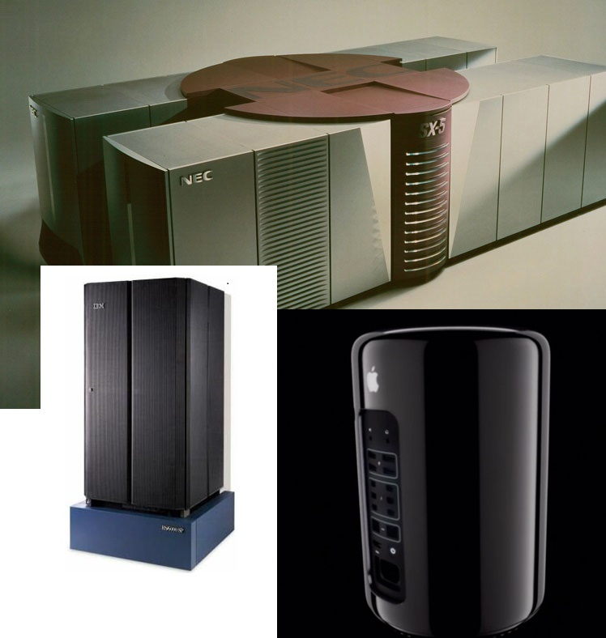
The IBM Power3 system served 1.33 TFLOPS of performance. The NEC SX-5 served only 65 GFLOPs.
One can buy a new Apple Mac Pro with a theoretical max performance of 7 TFLOPS (CPUs+GPUs).
Powerful commodity hardware

Processors
Modern CPUs have a max performance on the order 100-300 GFLOPs. Rise in mobile and ultra-scale computing has
driven improvements in power efficiency.
Networking
Multiple high-speed network technologies exist (InfiniBand, Ethernet). No need to rely on specialized networks
from a particular vendor.
Powerful commodity hardware
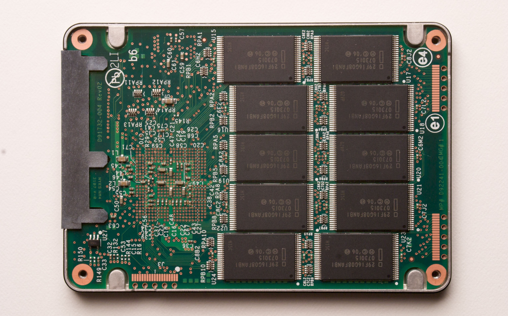
Storage
High-speed and parallel filesystems now available to anyone. Free and open-sourced filesystems available.
SSDs are having a disruptive effect on data-intensive computing.
External connections (USB3, Thunderbolt)
allow high-speed access to large multi-terabyte storage (disks, tape).
Powerful commodity hardware

Popularity in accelerator technology has risen sharply in recent years.
- New software frameworks (CUDA, OpenCL) and initiatives (OpenACC) have greatly increased the
usability of these devices.
- Hardware vendors have leveraged lower-priced commodity devices to engineer and manufacture
these specialized devices.
These devices exploit massive parallelization and vectorization.
In 1994, two NASA scientists strug together 30 identical PCs to create a scientific
computing system they called the Beowulf Cluster. The Message Passing Interface software was
used to allow programmers to use multiple PCs to work on a single problem. Their design formed the
basis for the common cluster design now found worldwide.
This was the beginning of the big push in distributed computing (and parallel computing).
Misintepretation of Moore's Law
It's not a law!!
Gordon Moore observed that the maximum number of transistors that could be economically added to
integrated circuits seem to double every 2 years. Another Intel manager, David House, suggested
that improved manufacturing practices would lower the time to 18 months.
It refers to transistor density -not clock rate
For ~42 years, the increased transistor counts meant higher clock rates and more instruction-level parallelism.
Users became accustomed to new CPUs speeding up their applications "auto-magically".
Misintepretation of Moore's Law
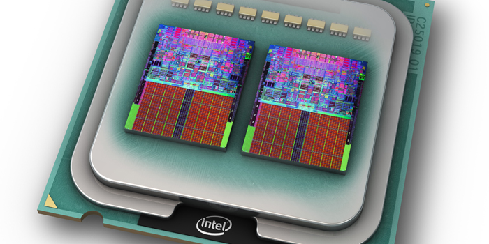
By ~2003, this "free speed-up" ended:
- too expensive to add more transistors
- unsustainable power requirements
- CPU designs led to potentially massive performance hits
CPU vendors adapted by introducing CPUs with multiple cores of simpler architecture.
Applications had to be able to utilize these multiple cores to harness the additional power in new CPUs.
Parallel computing has now become mainstream.
Common reasons against embracing parallel computing
Next year's hardware will be faster
The doubling clock rate every 18 months phenomenon is long gone!
- vendors focusing on energy efficiency more than performance
New CPUs and GPUs are getting more parallel-focused
- new CPUs have 4-12 cores. # of cores will most likely increase.
- new GPUs use thousands of threads for parallel programming
New computer hardware is getting more complicated
- Use of accelerators (GPUs, FPGAs, Xeon Phi)
I don't have access to parallel hardware
You actually do!
- Most current CPUs are multi-core
- GPU computing is a possibility for most workstations, PCs, and/or laptops
- Many universities/labs have cluster resources
Sources of free computing access:
- AWS Cloud Computing offers a free trial usage scheme
- NeSI has access methods with zero cost to NZ researchers. Ask me for for details!
No time/resource to rewrite my code
Don't re-invent the wheel!
- existing libraries/frameworks may be able do the parallel work for you
Writing parallel code isn't as hard as you think!
- adding multi-core support is trivial with infrastructures such as OpenMP and OpenACC.
- adding multiple CPU parallelism can be a bit more challenging
Need to determine if the possible increases in throughput/problem size will out balance the time
needed for development.
NeSI has CS specialists available to assist with any of the above
It's too risky to change my workflow
Don't necessarily need to rewrite code
- try switching to application(s) that exploit more parallelism
- try new scheduling techniques
Weigh the potential benefits
- time saved for more research
- additional ensembles to enhance scientific outputs
- address more challenging science
No risk, no reward
Fundamentals of parallel computing
IBM Master Inventor, Gene Amdahl, presented a conference paper in 1967 that analytically
explained how much a program can be sped up by adding parallelism.
The speedup (SN) of a program using N processes is limited by the portion of
the program that can only be performed sequentially (1-P).
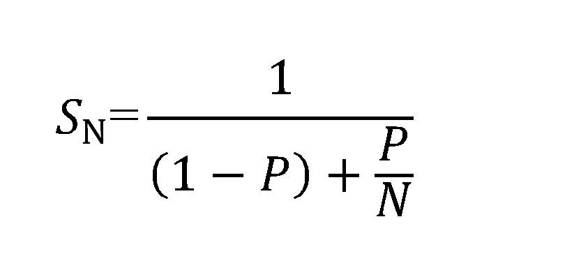
 Doesn't take account of:
Doesn't take account of:
- system and software overhead
- workload imbalance
Amdahl's Law (Highlights)
Can a program be 100% parallel?
In theory, yes! Such programs are said
to be embarrassingly parallel. Processors work independently as little to no information is required to be
passed between them. However, in practise, there will still be some start-up costs that prevent a 100% pure
parallel breakup of the work.
Bottlenecks that prevent perfect speedup
- passing information between tasks
- I/O
- spawning the individual tasks
- explicit required serialization in the program

The most common approach in adding parallelism to an
application. The computational domain is split among the individual CPUs.
Important notes:
- every CPU executes the same code but on different parts of the domain
- no 1 CPU "sees" the entire domain. Partitioned solution space
- what happens when a CPU requires data from another CPU's part of the domain?
Assume we are solving the heat equation on the 2D domain shown on the last slide.
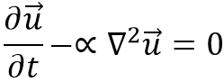
Applying a simple finite difference approximation yields the relation.
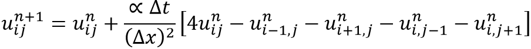
Notice that each CPU will require data points from 2 neighbouring CPUs
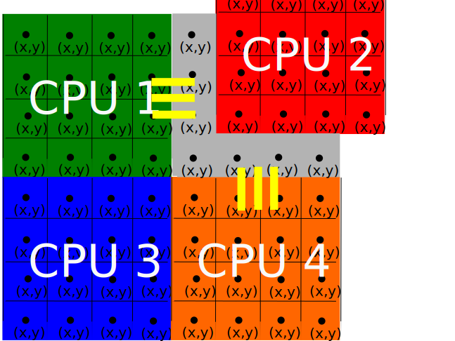
CPU2 will require data points from CPUs 1 and 4 to evaluate the finite
difference relation. It will need to store an additional column and row of data points. These extra
points are known as ghost cells.
These don't form part of the computational domain for any CPU but are necessary to compute the solution.
The number and rate at which these cells need to be updated will affect the parallel performance
of a code.

Different CPUs perform different operations on the same or different data.
Could be simple loop-unrolling or running entirely different functions/applications on data.
When to use this approach:
- computational domain too small to be decomposed
- code has multiple execution streams taking up significant run time
- used in hybrid parallelism (eg. when a code uses multiple levels of parallelism)
Symmetric multiprocessing (SMP)
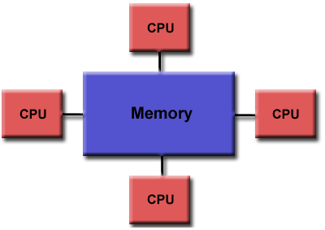
SMP is where multiple processors share a common memory block. As the entire
computational domain is held is this memory, all CPUs can "see" the whole domain and no
data movement is required. Eg. ghost cells not needed.
All modern multi-core processors (CPUs and GPUs) utilize SMP. Common software implementations
include OpenMP and CUDA.
Symmetric multiprocessing (SMP)
Pros
- Implementing parallelism is (fairly) easy
- Performance is good (all memory transactions are local)
- Supported in popular software frameworks (OpenMP, CUDA) and languages (Java)
Cons
- Parallelism limited by number of cores in CPU or threads in GPU
- Problem size limited by amount of physical memory CPU has

Each CPU only has access to its own local memory. If a CPU requires data from
another CPU's memory, it must request and wait for that data to be passed to it. So ghost
cells would need to be formed and filled on each CPU.
Clusters, like the machines NeSI operate, rely on this architecture for parallelism.
Pros
- MPI (Message Passing Interface) is the standard in dealing with data transfer between CPUs. It
is available on most -if not all- computing platforms.
- Allows one to tackle more larger problems as one has access to local memory of any CPU in cluster
- Allows one access to more CPUs than with a shared memory platform
Cons
- Harder to use/implement than a shared memory parallel code
- Performance will be less than SMP for the same # of CPUs
GOAL
Determine the integral of some function between two given points.
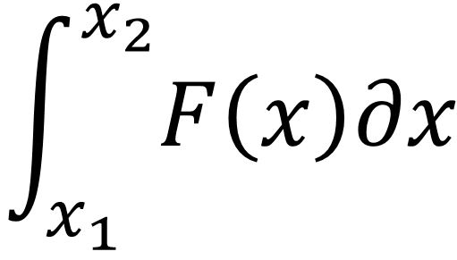
METHOD
Integral is equal to area under function's curve between the specified endpoints. Approximate
this area by summation of a series of rectangles drawn under the function. Higher the number of
rectangles, greater the accuracy of the area approximation.
Notice that the rectangles method introduces some error (denoted by the red). But
we can decrease this error by increasing the number of rectangles (or decreasing rectangle width).


Integral turns into a simple summation.

A simple algorithm would be:
rec_width = (some_constant)
sum = 0.0
for n = 1,num_rectangles:
sum = sum + F(xn) * rec_width
Key observations:
- most of the work concentrated in the for-loop
- area of each rectangle can be independently computed
- order of rectangle summation could be important*
*Adding a very small number to a very large number in a finite number
system can lead to inaccuracy!
Break the global sum into series of partial sums that are computed on
individual CPUs.
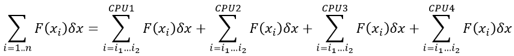
i1-i2 is the range of rectangles on which
each CPU works.

Start by initializing some required constants and variables
rec_width = (some_constant)
sum = 0.0
num_rectangles_per_cpu = num_rectangles / num_cpu
Now each CPU determines its own partial sum
for n = 1 to num_rectangles_per_cpu:
if (on CPU1) j = n
if (on CPU2) j = n + num_rectangles_per_cpu
if (on CPU3) j = n + 2*num_rectangles_per_cpu
if (on CPU4) j = n + 3*num_rectangles_per_cpu
sum = sum + F(xj) * rec_width
CPU1 gathers the partial sums from the other CPUs to determine the global value
of the integral.
if (on CPU1):
global_sum = sum
for n = 2 to num_cpu:
get value of sum from CPU n
global_sum = global_sum + sum
Observation points
- partial sum collection loop is a potential performance bottleneck
- possible accuracy problem as it as assumed that all sum values have the same order of magnitude
Local Variables
Variables that are defined on every CPU but can have different values on the individual
CPUs. A CPU doesn't know the value of another CPU's local variable. (Software interfaces such as
OpenMP and MPI allow a CPU to "request" the value however). sum is an
example of a local variable.
Global Variables
Variables that are defined and have the same value on all CPUs. global_sum
and num_rectangles_per_cpu are global variables.
A common mistake is not realizing the proper variable scope.
GOAL
Predict the in-situ electric field (E) in a volume of dielectric material of arbitrary size
and shape that is bombarded by an incident EM pulse.
METHOD
Dielectric volume has no initial E field. As the pulse passes through the volume, it induces an E field.
The total electric field at any given point is
Etotal=Epulse+Escatter
Escatter is the induced E between different points that have experienced the pulse.
The full volume integral equation describing the E field evolution is
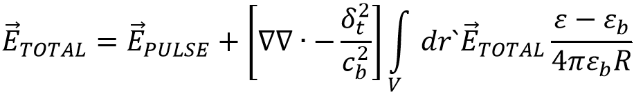
R is the distance between the point being evaluated and the points that have already
experienced the incident pulse.
This a form of the classical N-body problem
A predictor-corrector approach to solve the integral equation.
for 1 to num_timesteps:
for each point in volume:
evaluate integral with ETOTAL from last timestep
create updated ETOTAL value
re-evaluate integral term with updated ETOTAL
correct ETOTAL as final value for this timestep
Integral is approximated by a sum over all points in volume.
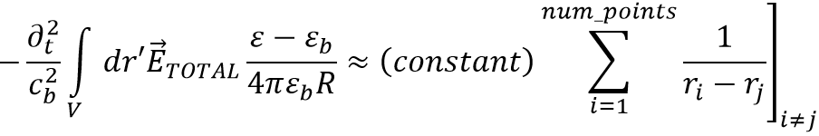
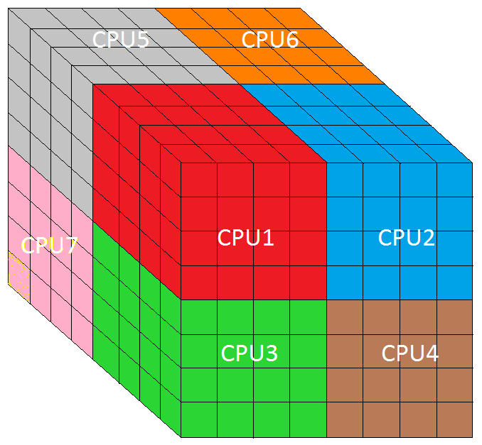
Key observations:
- work concentrated inside a loop
- summation order not important
- similar domain decomposition approach as with numerical integration example
can be applied
Volume is subdivided into a number of grid cells. These grid cells are gathered into
regions that are allocated to individual CPUs. Each CPU is responsible for evaluating the
integral for only the points it "owns".
The most time-consuming part is the evaluation of the N-body summation.
Break it into a series of partial sums.

Idea is for each CPU to determine all in-situ E field values for grid cells it "owns" with
respect to all other grid cells.
- no need for the entire domain to be formed on any one CPU
- CPUs will need to know the global location of all grid cells
Start by setting global constants -including a mapping array that
holds the grid cell locations.
mapping = array of locations of all grid cells
integral = 0.0
for n = 1 to num_cpus
Construct partial sum for grid cells belonging to CPU n
i1,i2,j1,j2,k1,k2 = global ranges of grid cells on CPU n
for i = i1 to i2:
for j = j1 to j2:
for k = k1 to k2:
integral(i,j,k) = interaction between grid cells on
local CPU and global point(i,j,k)
Need to add the partial sums to get the total integral for
the grid cells on CPU n
for p = 1 to num_cpus (p /= n):
integral(CPU n) = integral(CPU n) + integral(CPU p)
Notice:
there's a serial bottleneck as one needs to loop over all CPUs to update
each CPU's section of the global domain.
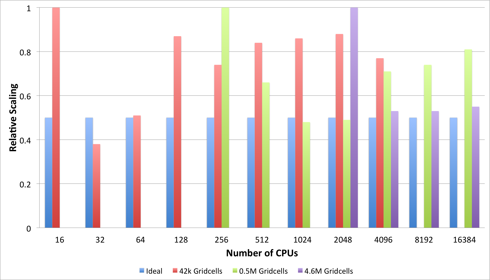
Results of running parallel code on an IBM Blue Gene/P at 3 different total grid cell counts. As # of CPUs doubles, run time should be halved ideally (blue bars)
The Unified Model (UM) is the numerical model developed at the UK MetOffice
for climate and weather research and forecasting. It contains hundreds of thousands of lines of code. It is
comprised of 4 sub-models:
- UM - atmosphere model
- NEMO - ocean model
- CICE - sea ice model
- JULES - land processes model
Each sub-model is a fully parallel application utilizing domain (and task) decomposition.
One can run 1 or more sub-models for a simulation. For example:
- EcoConnect runs use UM+JULES for its weather forecasts
- Olaf Morgenstern uses UM+JULES+NEMO+CICE for his climate runs
Running sub-models is an example of task decomposition. The CPUs allocated to the "full" UM job are
divided between the running sub-models. This division is usually controlled by input from the user.
| UM "Job" |
| 1024 CPUs |
| UM |
JULES |
NEMO |
CICE |
| 512 |
64 |
384 |
64 |

Task decomposition could be controlled by IF-THEN calls inside the main code. Information is available and
readily passed inside the main application. This is how the UM passes information between the atmosphere
and land sub-models
| Pros |
Cons |
| best performance |
more code complexity |
| harder to modify code |

Another software library/application performs the information exchange. Function calls
are used inside the main application so the passing of information still appears to be
internal.
| Pros |
Cons |
| less code complexity |
performance dependent on external software |
| more design flexibility |
API complexity |
| lifespan of external coupler |
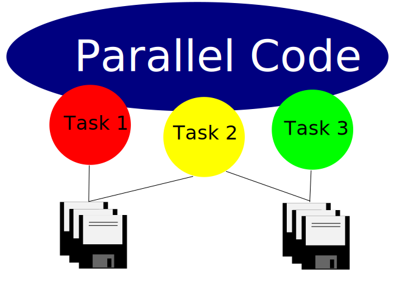
Some applications use a "loose-coupling" method. Usually this involves information being passed by
files. Eg. Output file of one sub-model is used later as input for another sub-model.
| Pros |
Cons |
| easy to implement |
performance now I/O dependent |
| less flexibility & adaptability |
Questions?